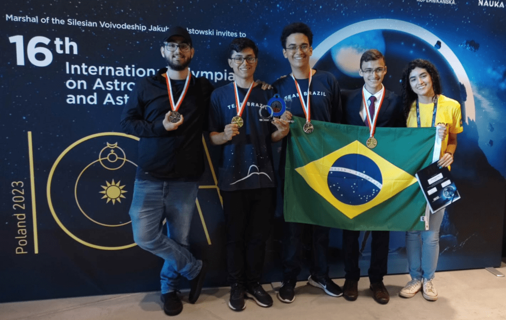
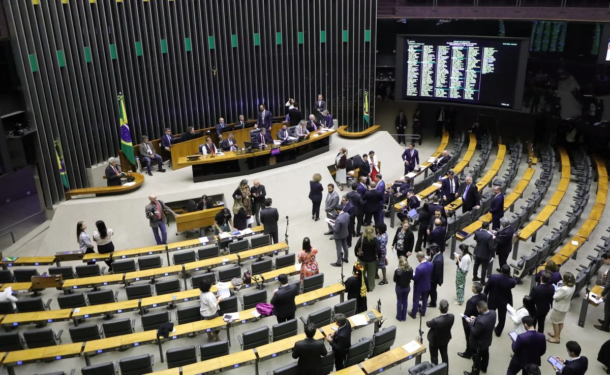

Ciência🧪
Brasil Brilha na 17ª Olimpíada Internacional de Astronomia e Astrofísica com Cinco Medalhas
O Brasil alcançou um feito notável na 17ª Olimpíada Internacional de Astronomia e Astrofísica (IOAA), realizada entre os dias 17 e 27 de agosto de 2024, no próprio território nacional. Sob a organização do Observatório Nacional (ON/MCTI), a equipe brasileira de estudantes de ensino médio demonstrou excelência ao conquistar cinco medalhas, sendo duas de prata e três de bronze.
Os estudantes Francisco Carluccio de Andrade e Heitor Borim Szabo foram agraciados com as medalhas de prata, enquanto Lucas Cavalcante Menezes, Gustavo Mesquita França e Natália Rosa Vinhaes receberam as medalhas de bronze. Além disso, Heitor Borim Szabo também fez parte da equipe multinacional que se destacou na Competição de Grupos.
A IOAA é uma competição global que desafia alunos do ensino médio a resolver problemas complexos de astronomia e astrofísica, incluindo questões teóricas, análise de dados e observação do céu. O evento visa não apenas testar o conhecimento e a habilidade dos participantes, mas também promover a integração cultural e o intercâmbio de conhecimentos entre jovens de diferentes países.
Este ano, a competição contou com a participação de 52 países, além do Brasil, que sediou o evento pela primeira vez. A IOAA foi estabelecida na Tailândia em 2006 e tem como objetivo disseminar o interesse pela astronomia entre os estudantes, além de fomentar a amizade e a cooperação internacional entre os futuros astrônomos.
O Brasil participa da IOAA desde sua primeira edição em 2007, e as equipes são selecionadas por meio de um processo rigoroso organizado pela Olimpíada Brasileira de Astronomia (OBA) e instituições parceiras, incluindo o Observatório Nacional.
O sucesso dos estudantes brasileiros na 17ª IOAA é um testemunho do talento e da dedicação dos jovens do país à ciência, e serve como inspiração para futuras gerações que têm interesse no vasto campo da astronomia e astrofísica.
Educação📚
Avanços e Perspectivas: Especialistas Avaliam o Novo Plano Nacional de Educação
O Novo Plano Nacional de Educação (PNE) representa um avanço significativo na abordagem da educação no Brasil, conforme avaliado por especialistas. A proposta, que está atualmente em análise na Câmara dos Deputados, foi desenvolvida após extensas consultas com a sociedade civil e considera as avaliações e o monitoramento do plano anterior. O projeto foi discutido em uma série de audiências públicas promovidas pela Comissão de Educação, com a primeira ocorrendo em 26 de agosto de 2024.
O novo PNE é elogiado por sua visão sistêmica do planejamento educacional e pela integração com outras políticas públicas, o que é visto como um passo adiante na garantia de uma educação de qualidade e acessível. O plano inclui 10 diretrizes, 18 objetivos, 58 metas e 253 estratégias que devem ser implementadas até 2034, abrangendo desde a educação infantil até o ensino superior, além de focar em aspectos como diversidade, inclusão e educação profissional e tecnológica.
Um dos aspectos mais notáveis do novo PNE é a reorganização dos conceitos de diretrizes, objetivos, estratégias e metas, que busca eliminar confusões presentes no plano vigente. Além disso, o plano enfatiza a importância da interseccionalidade entre as políticas públicas e o fortalecimento da pactuação federativa, essenciais para o cumprimento dos objetivos propostos.
O monitoramento do progresso do PNE é uma responsabilidade atribuída ao Instituto Nacional de Estudos e Pesquisas Educacionais Anísio Teixeira (Inep), que publicará avaliações das metas a cada dois anos. Este processo contará com o apoio do IBGE e de outros órgãos públicos que produzem dados e informações estatísticas, garantindo uma avaliação precisa e fundamentada.
A proposta do novo PNE é um reconhecimento de que o desenvolvimento da educação não apenas influencia outras áreas do desenvolvimento, mas também é influenciado por elas. Questões como pobreza e saúde são exemplos de como o progresso educacional pode ser desafiado e, ao mesmo tempo, impactar positivamente outras áreas da política pública.
Com a implementação do novo PNE, espera-se que o Brasil dê um grande passo em direção a um futuro onde a educação é vista como um pilar central para o desenvolvimento sustentável e inclusivo do país. A expectativa é que este plano traga melhorias tangíveis na qualidade da educação brasileira e, consequentemente, na vida dos cidadãos.
Política🗳
Macron Reafirma: Prisão de CEO do Telegram Não Foi Decisão Política
Em um movimento que gerou ampla discussão e especulação na mídia internacional, Pavel Durov, fundador do aplicativo de mensagens Telegram, foi detido na França. O presidente francês, Emmanuel Macron, assegurou que a prisão não foi uma decisão política, mas sim uma ação dentro do âmbito de uma investigação judicial independente.
A prisão de Durov ocorreu após sua chegada ao aeroporto Le Bourget, vindo do Azerbaijão em um jato privado. A detenção imediata levantou questões sobre as motivações por trás da ação, com várias fontes de notícias cobrindo o evento e fornecendo atualizações em tempo real. Macron enfatizou que a prisão foi um procedimento legal, desvinculado de qualquer influência política, e que a responsabilidade pela decisão recai sobre o judiciário.
Durov, conhecido por sua postura firme em relação à privacidade e segurança no uso do Telegram, enfrenta investigações relacionadas a crimes cibernéticos e financeiros. A polícia francesa, através de seu porta-voz, indicou que a investigação está focada na falta de cooperação em crimes cibernéticos e financeiros no Telegram.
Com dupla cidadania francesa e dos Emirados Árabes Unidos, Durov é uma figura proeminente no mundo da tecnologia, frequentemente comparado ao "Mark Zuckerberg da Rússia". Sua fortuna, estimada em US$ 15,5 bilhões, e sua influência global tornam o caso ainda mais significativo no cenário internacional.
A prisão também provocou tensões diplomáticas, especialmente entre França e Rússia, com Moscou exigindo acesso consular ao empresário. Autoridades russas descreveram a prisão como um ato hostil, aumentando o escrutínio sobre as relações franco-russas.
Este caso destaca a complexa interseção entre tecnologia, privacidade, segurança e política internacional. À medida que a situação se desenrola, o mundo observa atentamente para entender as implicações dessa prisão para o futuro da comunicação criptografada e a liberdade na internet.
Ambiental🌲
Alarme Vermelho no Horizonte: O Amanhecer Diferente Como Sinal de Alerta Ambiental

O fenômeno do sol nascer com uma coloração vermelha intensa, observado recentemente em Nova Friburgo e regiões próximas, é um espetáculo visual que esconde uma realidade preocupante. Especialistas apontam que essa alteração na cor do sol é causada pela presença de partículas de fumaça na atmosfera, resultado das queimadas que têm atingido áreas de vegetação nativa. A fuligem e as cinzas, liberadas em grande quantidade, são transportadas pelo vento e alteram a forma como a luz solar é refletida e dispersa, criando o efeito visual observado.
Além de ser um alerta para os impactos ambientais das queimadas, que prejudicam a qualidade do ar e afetam negativamente a fauna e a flora, o fenômeno também destaca as consequências para o equilíbrio dos ecossistemas. A destruição de hectares de floresta em áreas como Lumiar, em Nova Friburgo, exemplifica os danos que o fogo pode causar ao meio ambiente e à paisagem local.
A situação é agravada pelas condições climáticas secas e pelo vento forte, que contribuem para a rápida propagação dos incêndios, dificultando o combate e ampliando os danos causados. Ambientalistas enfatizam a necessidade de maior fiscalização e conscientização sobre o uso do fogo em atividades agrícolas e na limpeza de terrenos, visando prevenir novas ocorrências e preservar o meio ambiente.
Este incidente serve como um lembrete da importância de políticas ambientais eficazes e da responsabilidade coletiva na proteção da natureza. A beleza do sol vermelho ao amanhecer não deve ofuscar a urgência de se combater as práticas que comprometem a saúde do nosso planeta.